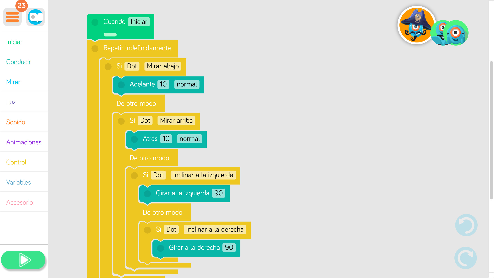

Manejar Dash desde Dot (con Dash y Dot):
Se trata de hacer un programa de tal manera que al inclinar a "Dot" dirija el movimiento de "Dash":

Dash debe reaccionar de la siguiente manera:
Si detecta obstáculo delante a la izquierda: gira 90º a la derecha
Si detecta obstáculo delante a la derecha: gira 90º a la izquierda
Si detecta obstáculo detrás: se mueve 10cm hacia delante
Con el complemento del xilófono, realiza un programa para que el robot toque una melodía. Para ello necesitarás instalar la aplicación "Xylo for Dash and Dot" (descargar para Android - descargar para iOS).
Realiza una coreografía con distintos robots que tenga entre 1 minuto y 1 minuto y medio de duración basándote en la canción del siguiente vídeo: